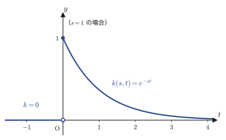
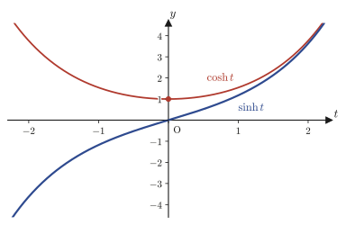
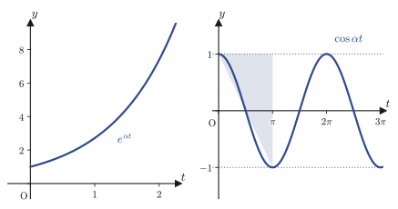
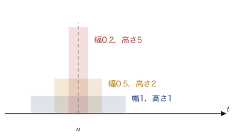
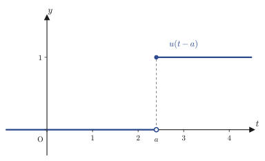

第31章ラプラス変換の定義と基本公式
第29・30章では，周期関数を三角関数の無限級数で表すフーリエ級数と，それを非周期関数にまで拡張したフーリエ変換 $\Four[f(t)]=\int_{-\infty}^{\infty}f(t)e^{-i\omega t}\,dt$ を学んだ．フーリエ変換は「時間 $t$ の関数を，周波数 $\omega$ の関数に翻訳する」強力な道具だったが，弱点が一つある——積分が $t=-\infty$ から $t=\infty$ まで届くので，$f(t)$ 自身がよほど速く $0$ に減衰してくれないと，積分がそもそも収束しない．ところが物理や工学で実際に扱う信号の多くは，$t=0$ の「スイッチが入った瞬間」から始まり（$t<0$ では信号がない，あるいは考えない），しかも減衰するどころか指数関数的に増加することさえある（たとえば回路に流れる電流の過渡応答，あるいは常微分方程式の解 $e^{\lambda t}$ 自身）．そこで登場するのが本章の主役，ラプラス変換（Laplace transform）である．積分区間を $t\ge0$ だけに制限し，フーリエ変換の核 $e^{-i\omega t}$（絶対値が常に $1$ で減衰しない）を，実部を持つ核 $e^{-st}$（$s$ の実部が正なら指数関数的に減衰する）に置き換えることで，多少暴れる関数でも変換できるようにしたのがラプラス変換である．
本章では，まずラプラス変換 $F(s)=\Lap[f(t)]=\int_0^\infty f(t)e^{-st}\,dt$ を定義し，のちの章で何度も引くことになる基本的な変換の一覧表（$1,\,t,\,t^n,\,\sin\omega t,\,\cos\omega t,\,e^{\omega t},\,\sinh\omega t,\,\cosh\omega t$）を，広義積分の計算だけを頼りに一つ一つ自分の手で作る．次に「そもそもどんな関数ならラプラス変換できるのか」という存在条件を調べ，指数関数的な急上昇にも耐えられる範囲を明らかにする．後半では，工学でパルス信号や瞬間的な衝撃を表すのに使われるデルタ関数・単位階段関数を導入し，「時間をずらす」操作がラプラス変換の世界では「$e^{-as}$ を掛ける」という単純な操作に対応するという移動定理を示す．最後に，周期関数の変換公式と，導関数のラプラス変換 $\Lap[f'(t)]=sF(s)-f(0)$ を扱う．この最後の公式こそ，線形微分方程式を代数方程式に変えてしまうという，ラプラス変換の最大の応用の鍵である（ただし，この応用そのものを解いてみせるのは本シリーズの後の巻に譲る——第VIII部で学ぶ常微分方程式の解法は，これとは別の，変換の力を借りない方法である）．
- ラプラス変換の定義 $F(s)=\Lap[f(t)]=\int_0^\infty f(t)e^{-st}\,dt$ と，積分核 $k(s,t)$，線形性
- 基本変換表：$\Lap[1],\Lap[t],\Lap[t^n],\Lap[\sin\omega t],\Lap[\cos\omega t],\Lap[e^{\omega t}],\Lap[\sinh\omega t],\Lap[\cosh\omega t]$ とその証明
- オイラーの公式を使うと $\Lap[\sin\omega t],\Lap[\cos\omega t]$ が複素数の計算だけから一度に得られること
- 指数 $\alpha$ 位の関数の定義と，ラプラス変換の存在条件（十分条件であって必要条件ではないこと）
- デルタ関数 $\delta(t-a)$，単位階段関数 $u(t-a)$ とそれぞれのラプラス変換
- ラプラス変換が1対1対応ではないという注意すべき事実
- 第2移動定理 $\Lap[f(t-a)u(t-a)]=e^{-as}F(s)$ ——時間のシフトが指数因子に化ける
- 周期関数のラプラス変換公式（1周期分の積分と無限等比級数）
- 導関数のラプラス変換 $\Lap[f'(t)]=sF(s)-f(0)$ ——微分方程式を代数方程式に変える鍵
もとにしたノート：望月泰英『数学ノート ラプラス変換』 pp. 1–14．
31.1 ラプラス変換の定義
これまで学んできた「関数の変換」——微分，積分，フーリエ変換——は，どれも「関数を入れると，別の関数（あるいは数）が出てくる」という意味では仲間である．ラプラス変換もその仲間の一つで，時間 $t$ の関数 $f(t)$ を，$s$ という新しい変数の関数 $F(s)$ に翻訳する．記号 $\Lap$（これから何度も使う，ラプラス変換を表す文字．筆記体の $L$ で，カリグラフィ体（calligraphic）の $\mathcal{L}$ と書く）を使って $F(s)=\Lap[f(t)]$ と書く．
定義31.1 ラプラス変換（Laplace transform）
関数 $f(t)$（$t\ge0$ で定義されているとする）に対して，
\begin{equation} F(s) = \Lap[f(t)] = \int_0^\infty f(t)\,e^{-st}\,dt \label{eq:31-def} \end{equation}が（広義積分として，すなわち第5章の定義5.3(II)にしたがって $\displaystyle\lim_{c\to\infty}\int_0^c f(t)e^{-st}\,dt$ の形で）存在するとき，この $F(s)$ を $f(t)$ のラプラス変換（Laplace transform）とよぶ．また，
$$ k(s,t) = e^{-st} $$とおくと，$k(s,t)$ は変数 $s$ と $t$ の2つを持つ関数で，$t<0$ の範囲では（ラプラス変換の積分に登場しないという約束のもとで）$0$ とみなし，$t\ge0$ では $e^{-st}$ である，すなわち
$$ k(s,t) = \begin{cases} 0 & (t\lt0) \\ e^{-st} & (t\ge0) \end{cases} $$と場合分けして書ける．この $k(s,t)$ を，ラプラス変換の積分核（integral kernel）とよぶ．定義31.1の積分は，この核 $k(s,t)$ と $f(t)$ の積を，$t$ について（$0$ から $\infty$ まで）積分したものだと考えることもできる．

ここで新しい変数 $s$ の意味を確認しておこう．定義31.1の積分は $t$ について実行するので，結果 $F(s)$ は $t$ を含まず，$s$ だけの関数になる．$e^{-st}$ の指数部分 $-st$ が無次元（単位を持たない数）であるためには，$s$ の単位は時間の単位の逆数でなければならない．時間の逆数は周波数（frequency）の単位そのものなので，ラプラス変換の変数 $s$ が動く範囲（$s$ 平面，あるいは今は実数の範囲）を周波数領域（frequency domain）ともよぶ．これは第30章のフーリエ変換で角周波数 $\omega$ が担っていた役割と同じであり，実際 $s$ を複素数 $s=\sigma+i\omega$ にまで拡張すると（本格的な議論は複素解析学の章に譲るが），$\sigma=0$ の場合 $k(s,t)=e^{-i\omega t}$ となってフーリエ変換の核そのものに一致する．つまりラプラス変換は，フーリエ変換の核 $e^{-i\omega t}$ に実部の減衰因子 $e^{-\sigma t}$ を足し合わせて，積分が収束する関数の範囲を大きく広げたものだと理解できる．
もう一つ，今後何度も使う性質を先に確認しておく．ラプラス変換は「積分」という線形な操作で定義されているので，和や定数倍をそのまま外に出せる——これを線形性（linearity）とよぶ．ノートには明示的には書かれていないが，この先ほぼすべての計算で無意識に使うことになる基本性質なので，ここで一度きちんと述べて証明しておく．
定理31.1 ラプラス変換の線形性（linearity）
$f(t),g(t)$ のラプラス変換がともに存在し，$c_1,c_2$ を定数とすると，
\begin{equation} \Lap[c_1f(t)+c_2g(t)] = c_1\Lap[f(t)] + c_2\Lap[g(t)] \label{eq:31-linearity} \end{equation}が成り立つ．
証明
定義31.1にそのまま代入すると，
$$ \Lap[c_1f(t)+c_2g(t)] = \int_0^\infty \bigl(c_1f(t)+c_2g(t)\bigr)e^{-st}\,dt $$となる．積分は和を保つ操作なので（定積分の性質，第5章5.2節既習），被積分関数の和を2つの積分の和に分けられる．さらに定数 $c_1,c_2$ は積分変数 $t$ に関係しないので積分の外に出せる．
$$ = c_1\int_0^\infty f(t)e^{-st}\,dt + c_2\int_0^\infty g(t)e^{-st}\,dt = c_1\Lap[f(t)]+c_2\Lap[g(t)] $$（証明終わり）
イメージ：ラプラス変換は「関数を関数へ写す機械」
高校までに慣れ親しんだ「関数」は，数 $x$ を入れると数 $f(x)$ が出てくる機械だった．ラプラス変換 $\Lap$ は，それとは1段階レベルが違う機械で，関数 $f(t)$ をまるごと入れると，別の関数 $F(s)$ がまるごと出てくる．このような「関数を関数に写すもの」を数学では作用素（operator）や変換（transform）とよぶ．線形性（定理31.1）は，この機械が「和を保ち，定数倍を保つ」——すなわち機械に入れる前に足し算・定数倍をしても，出てきた後に足し算・定数倍をしても同じ結果になる——という，機械としての一番素直な性質を述べている．
例題31.1 定義から直接 $\Lap[e^{-2t}]$ を計算する
定義31.1にしたがって，$f(t)=e^{-2t}$ のラプラス変換 $\Lap[e^{-2t}]$ を，広義積分の定義（第5章5.4節，$\lim_{c\to\infty}$ の形）まで戻って直接計算せよ．
解答 定義どおり，まず有限の上端 $c$ で積分してから $c\to\infty$ とする．
$$ \Lap[e^{-2t}] = \int_0^\infty e^{-2t}\cdot e^{-st}\,dt = \lim_{c\to\infty}\int_0^c e^{-(s+2)t}\,dt $$（$e^{-2t}\cdot e^{-st}=e^{-2t-st}=e^{-(s+2)t}$ と指数法則でまとめた．）括弧の中の積分を実行すると，
$$ \int_0^c e^{-(s+2)t}\,dt = \left[-\frac{1}{s+2}e^{-(s+2)t}\right]_0^c = -\frac{1}{s+2}e^{-(s+2)c} + \frac{1}{s+2}\underbrace{e^{0}}_{1} $$ここで $s+2>0$（すなわち $s>-2$）であれば，$c\to\infty$ のとき指数部分 $-(s+2)c\to-\infty$ なので $e^{-(s+2)c}\to0$ である．したがって，
$$ \Lap[e^{-2t}] = \lim_{c\to\infty}\left(-\frac{1}{s+2}e^{-(s+2)c} + \frac{1}{s+2}\right) = 0 + \frac{1}{s+2} = \frac{1}{s+2}\qquad(s>-2) $$を得る．この計算は，あとで公式31.6（$\Lap[e^{\omega t}]=\dfrac1{s-\omega}$）に $\omega=-2$ を代入した結果 $\dfrac1{s-(-2)}=\dfrac1{s+2}$ とも一致する．一般の $\omega$ でも同じ手順がそのまま通用することを，31.3節であらためて確認する．
31.2 べき関数のラプラス変換
定義31.1をひたすら手を動かして計算するところから始めよう．まずは最も簡単な関数 $f(t)=1$（定数関数）と $f(t)=t$ から出発し，そこで得たパターンを一般の $t^n$（$n$ は $0$ 以上の整数）に広げる．
31.2.1 $\Lap[1]$ と $\Lap[t]$
公式31.1 $\Lap[1]=\dfrac1s\ (s>0)$
証明
$f(t)=1$ を定義31.1にそのまま代入する．
$$ \Lap[1] = \int_0^\infty 1\cdot e^{-st}\,dt = \lim_{c\to\infty}\int_0^c e^{-st}\,dt = \lim_{c\to\infty}\left[-\frac1s e^{-st}\right]_0^c $$（不定積分 $\int e^{-st}\,dt=-\frac1s e^{-st}$ は，右辺を $t$ で微分すると $-\frac1s\cdot(-s)e^{-st}=e^{-st}$ に戻ることから確かめられる．）
$$ = \lim_{c\to\infty}\left(-\frac1s e^{-sc} - \left(-\frac1s e^{0}\right)\right) = \lim_{c\to\infty}\left(-\frac1s e^{-sc}\right) + \frac1s $$$s>0$ ならば $c\to\infty$ のとき $e^{-sc}\to0$ だから，第1項は $0$ に収束する．よって
$$ \Lap[1] = 0+\frac1s = \frac1s\qquad(s>0) $$（証明終わり．$s\le0$ では $e^{-sc}$ が $0$ に収束しないので広義積分自体が存在しない——これが「$s>0$」という条件の意味である．）
公式31.2 $\Lap[t]=\dfrac1{s^2}\ (s>0)$
証明
$f(t)=t$ を定義31.1に代入すると $\displaystyle\Lap[t]=\int_0^\infty t\cdot e^{-st}\,dt$ となる．これは（定数関数と違って）$t$ と $e^{-st}$ の積なので，高校数学既習の部分積分（integration by parts）$\int u'v\,dt=uv-\int uv'\,dt$ を使う．$u=-\frac1s e^{-st}$（これは $e^{-st}$ の原始関数），$v=t$ とおく，すなわち $u'=e^{-st}$，$v'=1$ である．まず不定積分の形で計算しておくと，
$$ \int t\cdot e^{-st}\,dt = \int t\cdot\left(-\frac1s e^{-st}\right)'dt = t\cdot\left(-\frac1s e^{-st}\right) - \int 1\cdot\left(-\frac1s e^{-st}\right)dt $$（部分積分の公式で，微分する側に $t$ を，積分する側に $e^{-st}$ を選んだ．$t$ を微分すると $1$ になって式が簡単になるからである．）右辺の残った積分をさらに計算すると，
$$ = -\frac{t}{s}e^{-st} + \frac1s\int e^{-st}\,dt = -\frac{t}{s}e^{-st} - \frac1{s^2}e^{-st} $$となる．これを定積分（広義積分）の形にもどすと，
$$ \Lap[t] = \lim_{c\to\infty}\left[-\frac{t}{s}e^{-st} - \frac1{s^2}e^{-st}\right]_0^c $$上端 $t=c$ を代入した部分は，$s>0$ のとき $c\to\infty$ で $0$ に収束する（$e^{-sc}$ が $0$ に近づく速さは，$c$ が前についていても $c\cdot e^{-sc}\to0$ となることが指数関数の増加が多項式の増加より速いことから保証される——これは第4章のテイラー展開の考え方，あるいは単に $\lim_{c\to\infty}c/e^{sc}=0$ をロピタルの定理で確認すればよい）．下端 $t=0$ を代入すると，$-\frac{0}{s}e^{0}-\frac1{s^2}e^{0}=-\frac1{s^2}$ である．したがって，
$$ \Lap[t] = \Bigl(0-0\Bigr) - \left(-\frac1{s^2}\right) = \frac1{s^2}\qquad(s>0) $$（証明終わり）
31.2.2 $\Lap[t^n]$ と漸化式による一般化
$\Lap[1]$，$\Lap[t]$ の計算がわかったので，次は $\Lap[t^2]$，さらに一般の $\Lap[t^n]$（$n=0,1,2,\ldots$）を求めたい．いきなり一般の $n$ で部分積分をするのではなく，まず $n=2$ の場合に手を動かしてみると，一般の $n$ でも通用するパターンが見えてくる．
$f(t)=t^2$ に部分積分を使うと（$u=-\frac1se^{-st}$，$v=t^2$，$v'=2t$），
$$ \int_0^\infty t^2 e^{-st}\,dt = \underbrace{\left[t^2\cdot\left(-\frac1s e^{-st}\right)\right]_0^\infty}_{0\ (s>0\text{ なら境界項は消える})} + \frac{2}{s}\int_0^\infty t\cdot e^{-st}\,dt = \frac2s\Lap[t] = \frac2s\cdot\frac1{s^2} = \frac{2}{s^3} $$と，$\Lap[t^2]$ が $\Lap[t]$ を使って表せてしまう．同じことが一般の $n$ でも起きる——これが公式31.3の中身である．
公式31.3 $\Lap[t^n]=\dfrac{n!}{s^{n+1}}\ (s>0,\ n=0,1,2,\ldots)$
証明（漸化式と数学的帰納法）
$f(t)=t^n$（$n\ge1$）に部分積分を使う．$u=-\frac1se^{-st}$（$u'=e^{-st}$），$v=t^n$（$v'=nt^{n-1}$）とおくと，
$$ \Lap[t^n] = \int_0^\infty t^n e^{-st}\,dt = \underbrace{\left[t^n\cdot\left(-\frac1se^{-st}\right)\right]_0^\infty}_{0} + \frac1s\int_0^\infty n\,t^{n-1}e^{-st}\,dt $$（境界項が $0$ になる理由：$t=0$ を代入すると $t^n=0$（$n\ge1$）だから $0$．$t\to\infty$ では，$t^n$ は多項式的にしか増えないのに対し $e^{-st}$（$s>0$）は指数関数的に $0$ に近づくので，積 $t^n e^{-st}\to0$ である——$\Lap[t]$ の証明で使ったのと同じ理屈を，次数 $n$ に拡張しただけである．）
右辺の定数 $n$ を積分の外に出すと，
$$ \Lap[t^n] = \frac{n}{s}\int_0^\infty t^{n-1}e^{-st}\,dt = \frac{n}{s}\Lap[t^{n-1}] $$という漸化式（recurrence relation：ある項を，1つ前の項を使って表す式．数列でおなじみの考え方を，ここでは「$n$ 番目のラプラス変換」という関数の列に対して使っている）を得る．同じ式で $n$ を $n-1,n-2,\ldots$ と1つずつ下げていくと，
$$ \Lap[t^{n-1}] = \frac{n-1}{s}\Lap[t^{n-2}],\qquad \Lap[t^{n-2}]=\frac{n-2}{s}\Lap[t^{n-3}],\ \ldots,\ \Lap[t^{1}]=\frac{1}{s}\Lap[t^0] $$が次々に成り立つ．これらを最初の式にすべて代入すると，
$$ \Lap[t^n] = \frac{n}{s}\cdot\frac{n-1}{s}\cdot\frac{n-2}{s}\cdots\frac{2}{s}\cdot\frac1s\cdot\Lap[t^0] $$となる．ここで $\Lap[t^0]=\Lap[1]=\dfrac1s$（公式31.1）であり，分数 $\dfrac ns\cdot\dfrac{n-1}s\cdots\dfrac1s$ は，分子に $n\times(n-1)\times\cdots\times1=n!$（$n$ の階乗，$n!$ の読み方は「エヌの階乗」），分母に $s$ が $n$ 個かかるので $s^n$ である．したがって，
$$ \Lap[t^n] = \frac{n!}{s^n}\cdot\frac1s = \frac{n!}{s^{n+1}}\qquad(s>0) $$を得る．（これは正確には「漸化式が成り立つならこの一般項になる」ことを示したものであり，論理を完全にするには数学的帰納法の形——「$n=0$ で成立し（$0!/s^1=1/s=\Lap[1]$，公式31.1そのもの），$n=k$ で成立すると仮定すると漸化式から $n=k+1$ でも成立する」——で書き直せる．中身は上の計算とまったく同じである．）（証明終わり）
例題31.2 $\Lap[t^2]$ を定義から直接計算し，公式31.3（$n=2$）と照合する
公式31.3の漸化式を経由せず，定義31.1の広義積分を直接（$n=2$ について部分積分を2回使って）計算し，$\Lap[t^2]=\dfrac{2!}{s^3}=\dfrac2{s^3}$ に一致することを確かめよ．
解答 $u=-\frac1se^{-st}$，$v=t^2$（$v'=2t$）として部分積分を1回行うと，
$$ \int_0^\infty t^2 e^{-st}\,dt = \underbrace{\left[t^2\left(-\frac1se^{-st}\right)\right]_0^\infty}_{0} + \frac2s\int_0^\infty t\,e^{-st}\,dt $$（境界項が $0$ になる理由は公式31.3の証明と同じ．）続けて，残った積分 $\int_0^\infty t\,e^{-st}\,dt$ にもう一度部分積分（$u=-\frac1se^{-st}$，$v=t$，$v'=1$）を使うと，
$$ \int_0^\infty t\,e^{-st}\,dt = \underbrace{\left[t\left(-\frac1se^{-st}\right)\right]_0^\infty}_{0} + \frac1s\int_0^\infty e^{-st}\,dt = \frac1s\cdot\frac1s = \frac1{s^2} $$（最後の積分は公式31.1の証明そのもの．）以上を合わせると，
$$ \int_0^\infty t^2 e^{-st}\,dt = \frac2s\cdot\frac1{s^2} = \frac{2}{s^3} $$となり，たしかに公式31.3に $n=2$ を代入した $\dfrac{2!}{s^3}=\dfrac{2}{s^3}$ と一致する（sympyの定積分でも同じ結果を検算済み）．部分積分を2回繰り返す代わりに，公式31.3の漸化式を1段ずつたどる操作は，まさにこの計算を「$n$ が変わっても同じ形」として抽象化したものになっている．
31.3 三角関数・双曲線関数・指数関数のラプラス変換
次は，工学でもっとも頻繁に現れる3種類の関数——三角関数 $\sin\omega t,\cos\omega t$，指数関数 $e^{\omega t}$，双曲線関数 $\sinh\omega t,\cosh\omega t$——のラプラス変換を求める．三角関数の変換は，これまでのような「部分積分を1回やって終わり」では済まず，ちょっとした工夫がいる．
31.3.1 $\Lap[\sin\omega t]$ と $\Lap[\cos\omega t]$
公式31.4 $\Lap[\sin\omega t]=\dfrac{\omega}{s^2+\omega^2}\ (s>0)$
証明
定義31.1に $f(t)=\sin\omega t$ を代入し，部分積分（$u=-\frac1se^{-st}$，$v=\sin\omega t$，$v'=\omega\cos\omega t$）を行う．
$$ \Lap[\sin\omega t] = \int_0^\infty \sin\omega t\cdot e^{-st}\,dt = \underbrace{\left[\sin\omega t\left(-\frac1se^{-st}\right)\right]_0^\infty}_{0} + \frac{\omega}{s}\int_0^\infty \cos\omega t\cdot e^{-st}\,dt $$（境界項が $0$ になる理由：$t=0$ で $\sin0=0$．$t\to\infty$ では $|\sin\omega t|\le1$（有界）なのに対し $e^{-st}\to0$（$s>0$）なので，積は $0$ に収束する．）右辺に残った積分 $\int_0^\infty\cos\omega t\,e^{-st}\,dt$ に，もう一度部分積分（$u=-\frac1se^{-st}$，$v=\cos\omega t$，$v'=-\omega\sin\omega t$）を使うと，
$$ \int_0^\infty \cos\omega t\cdot e^{-st}\,dt = \underbrace{\left[\cos\omega t\left(-\frac1se^{-st}\right)\right]_0^\infty}_{\frac1s} - \frac{\omega}{s}\int_0^\infty \sin\omega t\cdot e^{-st}\,dt $$（今度の境界項：$t\to\infty$ ではやはり $0$．$t=0$ では $\cos0\left(-\frac1se^{0}\right)=-\frac1s$ なので，$[\,\cdot\,]_0^\infty=0-\left(-\frac1s\right)=\frac1s$ である．）すなわち，
$$ \int_0^\infty \cos\omega t\cdot e^{-st}\,dt = \frac1s - \frac{\omega}{s}\Lap[\sin\omega t] $$という式が得られた．これを最初の式に代入すると，
$$ \Lap[\sin\omega t] = \frac{\omega}{s}\left(\frac1s - \frac{\omega}{s}\Lap[\sin\omega t]\right) = \frac{\omega}{s^2} - \frac{\omega^2}{s^2}\Lap[\sin\omega t] $$という，求めたい $\Lap[\sin\omega t]$ 自身が右辺にも現れる自己言及的（self-referential）な方程式になる．一見奇妙に見えるが，これは未知数 $X=\Lap[\sin\omega t]$ についての方程式 $X=\dfrac{\omega}{s^2}-\dfrac{\omega^2}{s^2}X$ にほかならない．移項して $X$ について解けばよい．
$$ \left(1+\frac{\omega^2}{s^2}\right)\Lap[\sin\omega t] = \frac{\omega}{s^2} \qquad\therefore\quad \Lap[\sin\omega t] = \frac{\dfrac{\omega}{s^2}}{1+\dfrac{\omega^2}{s^2}} = \frac{\omega}{s^2+\omega^2} $$（最後の等号は，分母・分子に $s^2$ を掛けて分数の中の分数を整理した．）（証明終わり）
イメージ：「自分自身を含む方程式」という発想
高校までの計算では，求めたい量が方程式の両辺に現れることはあまりない．しかしここでは，2回部分積分をすることで「振動する関数（$\sin,\cos$）が自分自身に戻ってくる」性質を利用し，$\Lap[\sin\omega t]$ を含む方程式をわざと作り出して，代数的に解いている．同じ発想は，$\int e^{ax}\sin bx\,dx$ のような積分を求めるときにも使われる（部分積分を2回行うと，最初の積分がもう一度現れて方程式になる）ので，覚えておいて損はない技巧である．
公式31.5 $\Lap[\cos\omega t]=\dfrac{s}{s^2+\omega^2}\ (s>0)$
証明
公式31.4の証明の途中で，すでに
$$ \int_0^\infty \cos\omega t\cdot e^{-st}\,dt = \frac1s - \frac{\omega}{s}\Lap[\sin\omega t] $$という式を得ていた．左辺はまさに $\Lap[\cos\omega t]$ なので，右辺に公式31.4の結果 $\Lap[\sin\omega t]=\dfrac{\omega}{s^2+\omega^2}$ を代入するだけでよい．
$$ \Lap[\cos\omega t] = \frac1s - \frac{\omega}{s}\cdot\frac{\omega}{s^2+\omega^2} = \frac1s\left(1-\frac{\omega^2}{s^2+\omega^2}\right) = \frac1s\cdot\frac{(s^2+\omega^2)-\omega^2}{s^2+\omega^2} = \frac1s\cdot\frac{s^2}{s^2+\omega^2} = \frac{s}{s^2+\omega^2} $$（証明終わり．公式31.4を先に求めておいたおかげで，公式31.5は代入するだけで済んだ——これがノートの計算順序（$\sin$を先に，$\cos$をあとで）の理由である．）
31.3.2 $\Lap[e^{\omega t}]$ とオイラーの公式による別証明
公式31.6 $\Lap[e^{\omega t}]=\dfrac1{s-\omega}\ (s>\omega)$
証明
定義31.1に $f(t)=e^{\omega t}$ を代入すると，指数法則 $e^{\omega t}\cdot e^{-st}=e^{-(s-\omega)t}$ より，
$$ \Lap[e^{\omega t}] = \int_0^\infty e^{\omega t}\cdot e^{-st}\,dt = \int_0^\infty e^{-(s-\omega)t}\,dt = \lim_{c\to\infty}\left[-\frac1{s-\omega}e^{-(s-\omega)t}\right]_0^c $$$s-\omega>0$（すなわち $s>\omega$）ならば $c\to\infty$ で $e^{-(s-\omega)c}\to0$（公式31.1の証明と同じ理由）なので，
$$ \Lap[e^{\omega t}] = 0-\left(-\frac1{s-\omega}\right) = \frac1{s-\omega}\qquad(s>\omega) $$（証明終わり．例題31.1で $\omega=-2$ の場合をすでに具体的に確認した．）
なぜ？：オイラーの公式でも $\sin,\cos$ の変換を導ける
公式31.6は $\omega$ が実数であることしか使っていないので，形式的に $\omega=i\omega_0$（$\omega_0$ は実数，$i=\sqrt{-1}$）という純虚数（pure imaginary number）を代入しても同じ式が成り立つと考えてみよう．
$$ \Lap[e^{i\omega_0 t}] = \frac1{s-i\omega_0} $$右辺を（分母の複素数を実数化するため）分母・分子に共役複素数 $s+i\omega_0$ を掛けて有理化すると，
$$ \frac1{s-i\omega_0} = \frac{s+i\omega_0}{(s-i\omega_0)(s+i\omega_0)} = \frac{s+i\omega_0}{s^2+\omega_0^2} = \frac{s}{s^2+\omega_0^2} + i\,\frac{\omega_0}{s^2+\omega_0^2} $$（分母は $(s-i\omega_0)(s+i\omega_0)=s^2-(i\omega_0)^2=s^2+\omega_0^2$ ——$i^2=-1$ を使った．）一方，第2章2.1節のオイラーの公式 $e^{i\theta}=\cos\theta+i\sin\theta$ を使うと $e^{i\omega_0 t}=\cos\omega_0 t+i\sin\omega_0 t$ なので，線形性（定理31.1，実部・虚部にそれぞれ適用したものと考える）より，
$$ \Lap[e^{i\omega_0 t}] = \Lap[\cos\omega_0 t + i\sin\omega_0 t] = \Lap[\cos\omega_0 t] + i\,\Lap[\sin\omega_0 t] $$である．2つの式の実部どうし・虚部どうしを比べると，
$$ \Lap[\cos\omega_0 t] = \frac{s}{s^2+\omega_0^2},\qquad \Lap[\sin\omega_0 t] = \frac{\omega_0}{s^2+\omega_0^2} $$となり，公式31.4・公式31.5と完全に一致する．部分積分を2回繰り返す代わりに，オイラーの公式と複素数の計算だけで同じ結果に到達できるわけである（この方法の厳密な正当化——複素数値の関数のラプラス変換や，$s$ を複素数にまで広げた議論——は複素解析学の章に譲るが，結果を「答え合わせ」に使う分には問題ない）．
例題31.3 オイラーの公式による $\Lap[\sin\omega t],\Lap[\cos\omega t]$ の別証明
公式31.4・公式31.5を，部分積分を使わずに，オイラーの公式と公式31.6だけを使って導け．
解答 上のボックス「なぜ？」の議論がそのまま解答になる．要点だけ書くと，$e^{i\omega t}=\cos\omega t+i\sin\omega t$（オイラーの公式）に線形性を適用して
$$ \Lap[e^{i\omega t}] = \Lap[\cos\omega t]+i\Lap[\sin\omega t] $$とする一方，公式31.6に $\omega\to i\omega$ を（形式的に）代入して
$$ \Lap[e^{i\omega t}] = \frac1{s-i\omega} = \frac{s+i\omega}{s^2+\omega^2} = \frac{s}{s^2+\omega^2}+i\frac{\omega}{s^2+\omega^2} $$を得る．両辺は同じ $\Lap[e^{i\omega t}]$ を表すので，実部と虚部をそれぞれ比較すれば
$$ \Lap[\cos\omega t]=\frac{s}{s^2+\omega^2},\qquad \Lap[\sin\omega t]=\frac{\omega}{s^2+\omega^2} $$が同時に得られる．部分積分を2回・自己言及的な方程式を解く（公式31.4の証明）のに対し，この方法は複素数の代数計算だけで済むので，計算としては手早い（ただし「複素数を代入してよい理由」を厳密に述べるには複素解析学の知識がいる，という代償がある）．
31.3.3 $\Lap[\sinh\omega t]$ と $\Lap[\cosh\omega t]$
思い出そう：双曲線関数の定義（第2章2.5節）
第2章2.5節の定義2.2で，双曲線関数（hyperbolic functions）を
$$ \sinh\omega t = \frac{e^{\omega t}-e^{-\omega t}}{2},\qquad \cosh\omega t = \frac{e^{\omega t}+e^{-\omega t}}{2} $$と定義した．三角関数 $\sin,\cos$ が単位円 $X^2+Y^2=1$ をパラメータ表示するのに対し，双曲線関数は双曲線 $X^2-Y^2=1$ の右半分を $(X,Y)=(\cosh t,\sinh t)$ とパラメータ表示する関数だった（詳しくは第2章2.5節を参照）．図31.2にそのグラフを示す——$\cosh\omega t$ は $t=0$ で最小値 $1$ をとる下に凸な偶関数，$\sinh\omega t$ は原点を通り単調に増加する奇関数である．

公式31.7 $\Lap[\sinh\omega t]=\dfrac{\omega}{s^2-\omega^2}\ (s>|\omega|)$
証明
定義（第2章定義2.2） $\sinh\omega t=\dfrac{e^{\omega t}-e^{-\omega t}}2$ に線形性（定理31.1）を適用し，公式31.6を（$\omega$ と $-\omega$ の両方に対して）使う．
$$ \Lap[\sinh\omega t] = \Lap\!\left[\frac{e^{\omega t}-e^{-\omega t}}2\right] = \frac12\Bigl(\Lap[e^{\omega t}]-\Lap[e^{-\omega t}]\Bigr) = \frac12\left(\frac1{s-\omega}-\frac1{s+\omega}\right) $$（公式31.6で $\omega\to-\omega$ に置き換えると $\Lap[e^{-\omega t}]=\dfrac1{s-(-\omega)}=\dfrac1{s+\omega}$ になることを使った．また，$\Lap[e^{\omega t}]$ は $s>\omega$，$\Lap[e^{-\omega t}]$ は $s>-\omega$ で存在するので，両方が同時に存在するのは共通範囲 $s>|\omega|$ のときである．）分数を通分すると，
$$ \frac12\left(\frac1{s-\omega}-\frac1{s+\omega}\right) = \frac12\cdot\frac{(s+\omega)-(s-\omega)}{(s-\omega)(s+\omega)} = \frac12\cdot\frac{2\omega}{s^2-\omega^2} = \frac{\omega}{s^2-\omega^2} $$（証明終わり）
公式31.8 $\Lap[\cosh\omega t]=\dfrac{s}{s^2-\omega^2}\ (s>|\omega|)$
証明
公式31.7とまったく同様に，$\cosh\omega t=\dfrac{e^{\omega t}+e^{-\omega t}}2$ に線形性と公式31.6を適用する．
$$ \Lap[\cosh\omega t] = \frac12\Bigl(\Lap[e^{\omega t}]+\Lap[e^{-\omega t}]\Bigr) = \frac12\left(\frac1{s-\omega}+\frac1{s+\omega}\right) = \frac12\cdot\frac{(s+\omega)+(s-\omega)}{s^2-\omega^2} = \frac12\cdot\frac{2s}{s^2-\omega^2} = \frac{s}{s^2-\omega^2} $$（証明終わり）
例題31.4 $\omega=3$ の具体的な数値で公式31.7・公式31.8を検算する
$\Lap[e^{3t}]$，$\Lap[e^{-3t}]$ を公式31.6から計算し，そこから $\Lap[\sinh3t]$，$\Lap[\cosh3t]$ を組み立てて，公式31.7・公式31.8（$\omega=3$）と一致することを具体的な数の計算だけで確かめよ．
解答 公式31.6に $\omega=3$ と $\omega=-3$ をそれぞれ代入すると，
$$ \Lap[e^{3t}] = \frac1{s-3},\qquad \Lap[e^{-3t}] = \frac1{s+3} $$である．定義 $\sinh3t=\dfrac{e^{3t}-e^{-3t}}2$ に線形性を適用すると，
$$ \Lap[\sinh3t] = \frac12\left(\frac1{s-3}-\frac1{s+3}\right) = \frac12\cdot\frac{(s+3)-(s-3)}{(s-3)(s+3)} = \frac12\cdot\frac{6}{s^2-9} = \frac{3}{s^2-9} $$これは公式31.7に $\omega=3$ を代入した $\dfrac{3}{s^2-3^2}=\dfrac3{s^2-9}$ とぴったり一致する．同様に $\cosh3t=\dfrac{e^{3t}+e^{-3t}}2$ から，
$$ \Lap[\cosh3t] = \frac12\left(\frac1{s-3}+\frac1{s+3}\right) = \frac12\cdot\frac{2s}{s^2-9} = \frac{s}{s^2-9} $$これも公式31.8に $\omega=3$ を代入した結果と一致する（sympyで検算済み）．
例題31.5 線形性を使って $\Lap[3-2t+4\sin3t]$ を求める
これまでに求めた基本変換表（公式31.1・31.2・31.4）と線形性（定理31.1）を組み合わせて，$f(t)=3-2t+4\sin3t$ のラプラス変換 $\Lap[f(t)]$ を求めよ．
解答 線形性（定理31.1，3つ以上の項でも同様に成り立つ）より，
$$ \Lap[3-2t+4\sin3t] = 3\Lap[1] - 2\Lap[t] + 4\Lap[\sin3t] $$各項に公式31.1（$\Lap[1]=1/s$），公式31.2（$\Lap[t]=1/s^2$），公式31.4（$\Lap[\sin\omega t]=\omega/(s^2+\omega^2)$，$\omega=3$）を代入すると，
$$ = 3\cdot\frac1s - 2\cdot\frac1{s^2} + 4\cdot\frac3{s^2+9} = \frac3s - \frac2{s^2} + \frac{12}{s^2+9} $$が答えである（$s>0$ で成立．sympyで，$f(t)$ を直接ラプラス変換した結果とこの式が一致することを検算済み）．このように，基本変換表と線形性さえあれば，個々の項がどれだけ増えても機械的にラプラス変換を計算できる——これが「まず基本変換表を作る」という本章の方針の狙いである．
31.4 ラプラス変換の存在条件
ここまで具体的な関数のラプラス変換を次々に計算してきたが，そもそも「どんな関数ならラプラス変換できるのか」を考えたことはなかった．実際，$f(t)=e^{t^2}$ のような猛烈な勢いで増加する関数では，$e^{t^2}\cdot e^{-st}=e^{t^2-st}$ は $t\to\infty$ でどんな $s$ を選んでも（$t^2$ が $st$ より速く増えるので）$+\infty$ に発散してしまい，広義積分は存在しない．この節では，「関数がどれくらい速く増加してもよいか」という限界を明らかにする．
定義31.2 指数 $\alpha$ 位の関数（function of exponential order $\alpha$）
区間 $0\le t<\infty$ で定義された関数 $f(t)$ について，ある定数 $M>0$ と $\alpha\ (0\le\alpha<\infty)$ が存在して，
$$ |f(t)| \le Me^{\alpha t}\qquad(\text{すべての }t\ge0\text{ について}) $$が成り立つとき，$f(t)$ は指数 $\alpha$ 位の関数（function of exponential order $\alpha$）であるという．
言い換えると，「$f(t)$ の増加のスピードは，ある指数関数 $Me^{\alpha t}$ に上から抑えられる程度でしかない」という意味である．例えば，$e^{\alpha t}$ 自身はもちろん指数 $\alpha$ 位である（$M=1$ でよい）．一方，$\cos\alpha t$ は $|\cos\alpha t|\le1=1\cdot e^{0\cdot t}$ が常に成り立つので，指数 $0$ 位（$M=1,\alpha=0$）である——三角関数のように振動して有界にとどまる関数は，どれも指数 $0$ 位に分類される．

定理31.2 ラプラス変換の存在定理（十分条件）
区間 $0\le t<\infty$ で定義された関数 $f(t)$ が，区分的に連続（piecewise continuous：有限個の点を除いて連続で，その点でも左右の極限が存在する）であり，かつ指数 $\alpha$ 位の関数である（定義31.2）とき，$s>\alpha$ をみたすすべての $s$ について，$f(t)$ のラプラス変換 $\Lap[f(t)]$ が存在する．
証明
$f(t)$ が $|f(t)|\le Me^{\alpha t}$ をみたすとき，$\Lap[f(t)]$ が存在する（＝広義積分が収束する）ことを示す．積分の絶対値は被積分関数の絶対値の積分以下である（三角不等式を積分に拡張した性質）ことを使うと，
$$ |F(s)| = \bigl|\Lap[f(t)]\bigr| = \left|\int_0^\infty f(t)e^{-st}\,dt\right| \le \int_0^\infty |f(t)|\,e^{-st}\,dt $$ここで $s>0$ のとき $e^{-st}>0$ なので絶対値記号を外に出せることに注意する．さらに仮定 $|f(t)|\le Me^{\alpha t}$ を使うと，
$$ \le \int_0^\infty Me^{\alpha t}e^{-st}\,dt = M\int_0^\infty e^{-(s-\alpha)t}\,dt $$この最後の積分は，公式31.1の証明とまったく同じ形（指数 $-(s-\alpha)$ の積分）である．$s-\alpha>0$（すなわち $s>\alpha$）であれば，
$$ M\int_0^\infty e^{-(s-\alpha)t}\,dt = M\left[-\frac1{s-\alpha}e^{-(s-\alpha)t}\right]_0^\infty = M\cdot\frac1{s-\alpha} = \frac{M}{s-\alpha} $$（$s-\alpha>0$ だから $t\to\infty$ で $e^{-(s-\alpha)t}\to0$，$t=0$ では $e^0=1$．公式31.1の証明の焼き直しである．）以上より，$|F(s)|\le\dfrac{M}{s-\alpha}$（有限の値）であることが示された．積分 $\int_0^\infty|f(t)|e^{-st}\,dt$ 自身が有限な値で上から押さえられている（かつ $f$ が区分的に連続で $|f(t)|e^{-st}$ が可積分である）ことから，もとの広義積分 $\int_0^\infty f(t)e^{-st}\,dt$ も収束する．したがって，$f(t)$ が $|f(t)|\le Me^{\alpha t}$ をみたせば，$s>\alpha$ のすべての $s$ で $\Lap[f(t)]$ が存在する．（証明終わり）
注意：逆は成り立たない
定理31.2は「指数 $\alpha$ 位 $\Longrightarrow$ ラプラス変換が存在する」という十分条件を述べているのであって，その逆（「ラプラス変換が存在する $\Longrightarrow$ 指数 $\alpha$ 位である」）は一般には成り立たない．つまり，指数関数のどんな速さの上限にも収まらないほど激しく増加する関数でも，ラプラス変換が存在してしまう場合がある．
具体例を1つ挙げる（ノートの証明はここで書きかけのまま途切れているので，本書で反例を補っておく）．次の関数を考える．
$$ f(t) = 2t\cos\!\left(e^{t^2}\right)e^{t^2} $$これは実は，ある関数の導関数として書ける．$g(t)=\sin\!\left(e^{t^2}\right)$ とおいて合成関数の微分をすると（$\dfrac{d}{dt}e^{t^2}=2te^{t^2}$ に注意），
$$ g'(t) = \cos\!\left(e^{t^2}\right)\cdot\frac{d}{dt}e^{t^2} = \cos\!\left(e^{t^2}\right)\cdot2te^{t^2} = f(t) $$すなわち $f(t)=g'(t)$ である．ここで，なぜ $f(t)$ がどんな指数 $\alpha$ 位にもならないのかを，直感の言葉だけでなくきちんと確かめておこう．$h(t)=e^{t^2}$ は $t\ge0$ で連続かつ狭義単調増加（$h'(t)=2te^{t^2}>0$，$t>0$）であり，$h(0)=1$ から出発して $t\to\infty$ とともに，値を1つも飛ばさずに連続的にどこまでも大きくなっていく．したがって（連続関数の中間値の定理により），どんなに大きな整数 $k$ に対しても，
$$ h(t_k) = e^{t_k^2} = 2\pi k $$をみたす $t_k>0$（具体的には $t_k=\sqrt{\ln(2\pi k)}$，$k\to\infty$ のとき $t_k\to\infty$）がただ1つ存在する．この $t_k$ では，
$$ \cos\!\left(e^{t_k^2}\right) = \cos(2\pi k) = 1 $$である——振動が「たまたま $2te^{t^2}$ の大きい瞬間にちょうど $0$ 近くまで下がって打ち消す」どころか，逆にちょうど最大値 $1$ をとる瞬間が，$t\to\infty$ の間に（$k=1,2,3,\ldots$ に対応して）無数に規則正しく訪れるのである．この瞬間には $|f(t_k)|=2t_ke^{t_k^2}\cdot1=2t_ke^{t_k^2}$ となる．ここで使うのは，$t\to\infty$ のとき $t^2-\alpha t=t(t-\alpha)\to\infty$ となる（$t$ が $\alpha$ より大きくなれば $t-\alpha>0$ となり，積 $t(t-\alpha)$ は限りなく大きくなる）という単純な事実である（この事実は，後の例題31.6(b)で $e^{t^2}$ 自身が指数 $\alpha$ 位でないことを示す際にも，形を変えてもう一度使う）．$t_k\to\infty$ なので，$k$（したがって $t_k$）を十分大きく取れば $t_k>\alpha$ かつ $2t_k>M$ となり，このとき
$$ |f(t_k)| = 2t_ke^{t_k^2} > Me^{\alpha t_k} $$が成り立ってしまう．つまり，どんな $M,\alpha$ を先に選んでおいても，それを破る $t_k$ が（無数に）存在するので，$f(t)$ はどんな指数 $\alpha$ 位でもない（定義31.2をみたす $M,\alpha$ が存在しない）．しかし，$\Lap[f(t)]=\Lap[g'(t)]$ を部分積分で計算すると，
$$ \Lap[f(t)] = \int_0^\infty g'(t)e^{-st}\,dt = \Bigl[g(t)e^{-st}\Bigr]_0^\infty + s\int_0^\infty g(t)e^{-st}\,dt $$$g(t)=\sin(e^{t^2})$ は $-1\le g(t)\le1$ で常に有界（三角関数の値域だから）なので，境界項は $t\to\infty$ で $g(t)e^{-st}\to0$（$s>0$），$t=0$ では $g(0)e^0=\sin(e^0)=\sin1$ である．よって境界項は $0-\sin1=-\sin1$．残った積分 $\int_0^\infty g(t)e^{-st}\,dt$ も，$|g(t)|\le1$ なので定理31.2の証明と同じ理屈で（$M=1,\alpha=0$ の場合として）収束する．したがって，
$$ \Lap[f(t)] = -\sin1 + s\int_0^\infty \sin\!\left(e^{t^2}\right)e^{-st}\,dt $$は（すべての $s>0$ で）ちゃんと存在する．これで「指数 $\alpha$ 位でないのにラプラス変換は存在する」関数が実際に見つかったことになる．この現象の背景には，$f(t)$ の激しい増加が，有界な関数 $g(t)$ の「見えない導関数」として書けているという事情がある——振動が打ち消し合っているのではなく，$g(t)$ 自身が有界だからこそ，その導関数のラプラス変換が（部分積分によって）$g$ の有界性だけから存在してしまうのである．この具体例については，以上ですでに存在を完全に証明できた．しかし，指数 $\alpha$ 位でない関数一般について，一つ一つ反例を手作りすることなく，ラプラス変換が存在するかどうかを体系的に判定するには，広義積分のより進んだ収束判定の理論が必要であり，本書の範囲を超える．
例題31.6 指数 $\alpha$ 位かどうかを判定する
次の2つの関数について，指数 $\alpha$ 位の関数であるかどうかを調べよ．(a) $f(t)=t^2$．(b) $f(t)=e^{t^2}$．
解答 (a) $\alpha=1$，$M$ を適当に大きく取れることを示せばよい．極限
$$ \lim_{t\to\infty}\frac{t^2}{e^{t}} = \lim_{t\to\infty}t^2 e^{-t} = 0 $$（指数関数 $e^t$ は，$t$ のどんな多項式よりも速く増加する——これはロピタルの定理を2回使うか，テイラー展開 $e^t=1+t+\frac{t^2}2+\cdots$ の各項と比べれば納得できる事実である）が成り立つので，$t\to\infty$ で $t^2e^{-t}\to0$，すなわち比 $t^2/e^t$ は（有界などころか）$0$ に収束する．したがって，ある十分大きな $M$（例えば $t\ge0$全体で $t^2e^{-t}$ の最大値を $M$ とすればよい）が存在して $t^2\le Me^t$ が成り立つ．よって $f(t)=t^2$ は指数 $1$ 位の関数である（実際には，どんな小さい $\alpha>0$ を選んでも同様の議論が成り立つので，指数 $0^+$位と言いたくなるところだが，定義31.2の形式では「指数 $1$ 位」で十分条件を満たすと言えば足りる）．
(b) $f(t)=e^{t^2}$ について，仮に指数 $\alpha$ 位（$\alpha$ はある有限な定数）だとすると，$|e^{t^2}|\le Me^{\alpha t}$，すなわち $e^{t^2-\alpha t}\le M$ がすべての $t\ge0$ で成り立たなければならない．しかし $t\to\infty$ のとき $t^2-\alpha t=t(t-\alpha)\to\infty$（$\alpha$ がどんな有限の値でも，$t$ が $\alpha$ より十分大きくなれば $t-\alpha>0$ になり，$t(t-\alpha)$ は限りなく大きくなる）ので，$e^{t^2-\alpha t}\to\infty$ となり，どんな $M$ を選んでも不等式 $e^{t^2-\alpha t}\le M$ を破ってしまう．したがって $f(t)=e^{t^2}$ は，どんな $\alpha$ を選んでも指数 $\alpha$ 位の関数ではない（実際，冒頭で述べたとおり $e^{t^2}$ 自身のラプラス変換はどんな $s$ でも存在しない）．
31.5 デルタ関数・単位階段関数と移動定理
ここからは，工学（特に制御理論や回路理論）で信号を表すのに使われる2つの特殊な「関数」——瞬間的な衝撃を表すデルタ関数と，あるタイミングでスイッチが入ることを表す単位階段関数——のラプラス変換を求める．さらに，「時間を $a$ だけずらす」という操作が，ラプラス変換のがわではどう見えるかを調べる（第2移動定理）．
31.5.1 デルタ関数のラプラス変換
デルタ関数 $\delta(t-a)$ は，普通の意味での「関数」ではない——$t=a$以外では値が $0$，$t=a$ではいわば無限大という，高校までに扱ってきた関数とは性質が違うものである（数学的に厳密には超関数（distribution）とよばれる対象で，本格的な扱いは大学の解析学の範囲を超える）．ここでは，デルタ関数を「幅を $0$ に近づけていく，面積が常に $1$ の矩形パルスの極限」として直感的にイメージすることにする．

定義31.3 デルタ関数のふるい性質（sifting property）
デルタ関数 $\delta(t-a)$ は，任意の（$t=a$ で連続な）関数 $f(t)$ に対して，
$$ \int_{-\infty}^{\infty} f(t)\,\delta(t-a)\,dt = f(a) $$という性質（ふるい性質，sifting property：積分の中の $f(t)$ の値のうち，$t=a$ での値だけを「ふるいにかけて」取り出すことから）をみたすものとして扱う．特に $f(t)=1$ の場合，$\displaystyle\int_{-\infty}^\infty\delta(t-a)\,dt=1$（図31.4のどのパルスも面積が $1$ であったことに対応する）である．
公式31.9 $\Lap[\delta(t-a)]=e^{-as}\ (a\ge0)$
証明
定義31.1に $f(t)=\delta(t-a)$ を代入すると $\displaystyle\Lap[\delta(t-a)]=\int_0^\infty \delta(t-a)e^{-st}\,dt$ である．$a\ge0$ のとき，区間 $(-\infty,0)$ では $t-a<0$ なので $\delta(t-a)=0$（デルタ関数の「衝撃」は $t=a$ の一点にしかないから）である．したがって，積分区間を $[0,\infty)$ から $(-\infty,\infty)$ に広げても被積分関数の値は変わらず，積分の値も変わらない．
$$ \int_0^\infty \delta(t-a)e^{-st}\,dt = \int_{-\infty}^{\infty} e^{-st}\,\delta(t-a)\,dt $$ここで $f(t)=e^{-st}$ とおいて定義31.3のふるい性質を適用すると，$t=a$ での値 $f(a)=e^{-sa}$ が取り出される．
$$ = f(a) = e^{-s\cdot a} = e^{-as} $$（証明終わり）
31.5.2 単位階段関数とそのラプラス変換
定義31.4 単位階段関数（unit step function）
定数 $a\ge0$ に対して，
$$ u(t-a) = \begin{cases} 0 & (t\lt a) \\ 1 & (t\ge a) \end{cases} $$を，$t=a$ で $0$ から $1$ へ「スイッチが入る」関数とみなし，単位階段関数（unit step function，ヘヴィサイドの階段関数（Heaviside step function）ともいう）とよぶ．$a=0$ のときは単に $u(t)$ と書く．

公式31.10 $\Lap[u(t-a)]=\dfrac{e^{-as}}{s}\ (a\ge0)$
証明
定義31.1に代入すると，$\displaystyle\Lap[u(t-a)]=\int_0^\infty u(t-a)e^{-st}\,dt$ である．$u(t-a)$ は $t\lt a$ で $0$，$t\ge a$ で $1$ なので，積分区間を $a$ で分割する．
$$ \Lap[u(t-a)] = \int_0^a \underbrace{0}_{u(t-a)=0}\cdot e^{-st}\,dt + \int_a^\infty \underbrace{1}_{u(t-a)=1}\cdot e^{-st}\,dt = 0 + \int_a^\infty e^{-st}\,dt $$残った積分は公式31.1の証明と同じ形（積分区間の下端が $0$ でなく $a$ になっただけ）なので，
$$ \int_a^\infty e^{-st}\,dt = \left[-\frac1se^{-st}\right]_a^\infty = 0-\left(-\frac1se^{-sa}\right) = \frac{e^{-as}}{s}\qquad(s>0) $$（証明終わり）
注意：ラプラス変換は1対1対応ではない
公式31.1で $\Lap[1]=\dfrac1s$，公式31.10で $a=0$ とすると $\Lap[u(t)]=\dfrac1s$ を得る．すなわち，もとの関数としては互いに異なる $f(t)=1$（$t<0$ でも $1$）と $f(t)=u(t)$（$t<0$ では $0$）が，同じ像 $F(s)=1/s$ に写ってしまう（図31.6）．これは，高校までに慣れ親しんだ「関数は逆に戻せる（1対1対応である）」という素朴なイメージを裏切る事実である．理由は単純で，ラプラス変換の定義31.1の積分は $t\ge0$ の範囲でしか $f(t)$ の値を見ていない——$t<0$ での $f(t)$ の値がどうであれ，積分の結果に影響しないからである．したがって，ラプラス変換を計算するときは（暗黙のうちに）「$t<0$ での関数の値は考えない（あるいは $0$ とみなす）」という了解のもとで話を進めていることになる．
31.5.3 第2移動定理
単位階段関数を使うと，「$t=a$ より前は $0$，$t=a$ から後は $f(t-a)$ という形（もとの関数 $f$ を $a$ だけ右にずらしたもの）」という関数を $f(t-a)u(t-a)$ と書き表せる．この関数のラプラス変換が，$f(t)$ 自身のラプラス変換 $F(s)$ とどう関係するかを調べる．
定理31.3 第2移動定理（second shift theorem）
$F(s)=\Lap[f(t)]$ とする．$a\ge0$ のとき，
\begin{equation} \Lap[f(t-a)\,u(t-a)] = e^{-as}F(s) \label{eq:31-shift2} \end{equation}が成り立つ．
証明
定義31.1に代入し，公式31.10の証明と同様に積分区間を $a$ で分割する．
$$ \Lap[f(t-a)u(t-a)] = \int_0^\infty f(t-a)u(t-a)e^{-st}\,dt = \int_0^a f(t-a)\cdot0\cdot e^{-st}\,dt + \int_a^\infty f(t-a)\,e^{-st}\,dt $$（$t\lt a$ では $u(t-a)=0$ なので第1項は $0$．）残った積分で，置換積分 $u=t-a$（$du=dt$，$t=a$ のとき $u=0$，$t\to\infty$ のとき $u\to\infty$）を行う．
$$ \int_a^\infty f(t-a)e^{-st}\,dt = \int_0^\infty f(u)e^{-s(u+a)}\,du $$（積分区間が $[a,\infty)\to[0,\infty)$ に変わるのは，$t$ 軸を $a$ だけ平行移動して $u$ 軸に読み替えたことに対応する——横軸をそのまま $a$ だけずらして原点を $t=a$ に置き直したのだと考えればよい．）指数部分を $e^{-s(u+a)}=e^{-sa}\cdot e^{-su}$ と分けると，$e^{-sa}$ は $u$ に関係しない定数なので積分の外に出せる．
$$ \int_0^\infty f(u)e^{-s(u+a)}\,du = e^{-sa}\int_0^\infty f(u)e^{-su}\,du = e^{-as}\Lap[f(t)] = e^{-as}F(s) $$（積分変数の記号を $u$ から $t$ に変えても積分の値は変わらないので，$\int_0^\infty f(u)e^{-su}\,du=\Lap[f(t)]=F(s)$ である．）（証明終わり）
例題31.7 単位階段関数でパルス関数を作り，そのラプラス変換を求める
$g(t)=u(t-1)-u(t-3)$（$t=1$ で $0$ から $1$ に立ち上がり，$t=3$ で $1$ から $0$ に戻る，幅 $2$ の矩形パルス）のラプラス変換を求めよ．
解答 線形性（定理31.1）と公式31.10（$\Lap[u(t-a)]=e^{-as}/s$）をそのまま適用すればよい．
$$ \Lap[g(t)] = \Lap[u(t-1)] - \Lap[u(t-3)] = \frac{e^{-s}}{s} - \frac{e^{-3s}}{s} = \frac{e^{-s}-e^{-3s}}{s} $$（sympyで検算済み．）このように，単位階段関数を組み合わせるだけで，任意の区間だけ値を持つ「窓」のような関数を作り，そのラプラス変換を機械的に求めることができる——これは制御工学でパルス状の入力信号を扱うときに使われる基本テクニックである．
例題31.8 第2移動定理を用いて $\Lap[(t-2)^2u(t-2)]$ を求める
第2移動定理（定理31.3）を用いて，$\Lap[(t-2)^2u(t-2)]$ を求めよ．
解答 定理31.3で $a=2$，$f(t)=t^2$ とすればよい（$(t-2)^2u(t-2)=f(t-2)u(t-2)$ の形になっている）．公式31.3より $F(s)=\Lap[t^2]=\dfrac{2!}{s^3}=\dfrac2{s^3}$ なので，
$$ \Lap[(t-2)^2u(t-2)] = e^{-2s}F(s) = e^{-2s}\cdot\frac2{s^3} = \frac{2e^{-2s}}{s^3} $$が答えである（sympyで検算済み）．もし第2移動定理を使わずに定義から直接計算しようとすると，$\int_2^\infty(t-2)^2e^{-st}dt$ を部分積分で3回処理する必要があるが，定理31.3のおかげで「$F(s)$ を求めて $e^{-as}$ を掛けるだけ」で済む．
31.6 周期関数・導関数のラプラス変換
本節では，ノートの後半（p.12〜p.13）に残っていた3つの結果——周期関数のラプラス変換公式，導関数のラプラス変換公式，そしてその応用として証明抜きで書かれていた誤差関数の変換公式——をまとめて扱う．このうち導関数の公式は，本章冒頭で述べたとおり，線形微分方程式を代数方程式に変換するというラプラス変換の代表的な応用（本シリーズの後の巻で扱う）の要となる，本章でもっとも重要な結果である．
31.6.1 周期関数のラプラス変換
周期 $T$ の周期関数（periodic function）——高校数学で $\sin,\cos$ について学んだのと同じ意味で，$f(t+T)=f(t)$ がすべての $t\ge0$ で成り立つ関数——を考える．三角関数だけでなく，矩形波や鋸歯状波のような，工学でよく使われる周期的な入力信号のラプラス変換をまとめて扱えると便利である．そのためには，積分区間 $[0,\infty)$ を，1周期ずつ $[0,T),[T,2T),[2T,3T),\ldots$ と輪切りにして考えればよい．
公式31.11 周期関数のラプラス変換
$f(t)$ が周期 $T$ の周期関数（$f(t+T)=f(t)$，$t\ge0$）で区分的に連続であるとき，
\begin{equation} \Lap[f(t)] = \frac{F_0(s)}{1-e^{-sT}} \label{eq:31-periodic} \end{equation}が成り立つ．ここで $F_0(s)$ は，最初の1周期分だけの積分
$$ F_0(s) = \int_0^T f(t)\,e^{-st}\,dt $$である．
証明
$f(t)$ は周期 $T$ の周期関数なので，$f(t)=f(t+nT)$（$n$ は整数）が成り立つ．定義31.1の積分区間 $[0,\infty)$ を，$[0,T),[T,2T),[2T,3T),\ldots$ と1周期ずつに分割する．
$$ \Lap[f(t)] = \int_0^\infty f(t)e^{-st}\,dt = \underbrace{\int_0^T f(t)e^{-st}\,dt}_{F_0(s)} + \int_T^{2T} f(t)e^{-st}\,dt + \int_{2T}^{3T} f(t)e^{-st}\,dt + \cdots $$第2項以降の積分を，それぞれ置換積分 $u=t-nT$（$n=1,2,\ldots$，$du=dt$）で最初の周期に引き戻す．たとえば第2項（$n=1$）では，$t=T$ のとき $u=0$，$t=2T$ のとき $u=T$ であり，かつ周期性 $f(t)=f(u+T)=f(u)$ を使うと，
$$ \int_T^{2T} f(t)e^{-st}\,dt = \int_0^T f(u+T)\,e^{-s(u+T)}\,du = e^{-sT}\int_0^T f(u)e^{-su}\,du = e^{-sT}F_0(s) $$（積分変数を $t$ から $u$ に置換したので，微分記号も $dt$ から $du$ に変わることに注意する．）同様に，$n$ 番目の項（区間 $[nT,(n+1)T)$）も $u=t-nT$ で引き戻すと，周期性を $n$ 回使って $e^{-nsT}F_0(s)$ になる．したがって，
$$ \Lap[f(t)] = F_0(s) + e^{-sT}F_0(s) + e^{-2sT}F_0(s) + \cdots = F_0(s)\bigl(1+e^{-sT}+e^{-2sT}+\cdots\bigr) $$括弧の中は，公比 $r=e^{-sT}$ の無限等比級数である．$s>0$ ならば $0\lt e^{-sT}\lt1$（すなわち $|r|\lt1$）なので，高校数学既習の無限等比級数の和の公式 $1+r+r^2+\cdots=\dfrac1{1-r}$（$|r|\lt1$）が使え，
$$ \Lap[f(t)] = F_0(s)\cdot\frac1{1-e^{-sT}} = \frac{F_0(s)}{1-e^{-sT}} $$を得る．（証明終わり）
イメージ：無限等比級数としての周期関数の変換
公式31.11の証明の核心は，「同じ形の関数 $F_0(s)$ に，少しずつ指数的に薄まる重み $1,e^{-sT},e^{-2sT},\ldots$ を掛けながら無限回足し合わせる」という操作を，高校で学んだ無限等比級数の和の公式にそのまま帰着させたことにある．図31.8のように，各周期からの寄与は同じ「形」を持ちながら，公比 $e^{-sT}$（$0\lt e^{-sT}\lt1$）でどんどん小さくなっていく——だからこそ，無限個を足しても有限な値に収束するのである．
例題31.9 周期矩形波のラプラス変換
周期 $T=2\pi$ の矩形波（次のように1周期分の値が決まり，それが繰り返される関数）
$$ f(t) = \begin{cases} 1 & (0\le t\lt\pi) \\ 0 & (\pi\le t\lt2\pi) \end{cases},\qquad f(t+2\pi)=f(t) $$のラプラス変換を，公式31.11を使って求めよ．
解答 公式31.11の $F_0(s)=\displaystyle\int_0^T f(t)e^{-st}\,dt$ に，1周期分（$T=2\pi$）の $f(t)$ の形——$[0,\pi)$ で $1$，$[\pi,2\pi)$ で $0$——を代入する．
$$ F_0(s) = \int_0^\pi 1\cdot e^{-st}\,dt + \int_\pi^{2\pi} 0\cdot e^{-st}\,dt = \int_0^\pi e^{-st}\,dt = \left[-\frac1se^{-st}\right]_0^\pi = \frac{1-e^{-\pi s}}{s} $$（第2項の積分は被積分関数が $0$ なので消える．残った積分は公式31.1の証明と同じ形である．）これを公式31.11に代入すると，
$$ \Lap[f(t)] = \frac{F_0(s)}{1-e^{-sT}} = \frac{\dfrac{1-e^{-\pi s}}{s}}{1-e^{-2\pi s}} = \frac{1-e^{-\pi s}}{s\bigl(1-e^{-2\pi s}\bigr)} $$分母は $1-e^{-2\pi s}=(1-e^{-\pi s})(1+e^{-\pi s})$（$1-x^2=(1-x)(1+x)$ の因数分解に $x=e^{-\pi s}$ を代入した）と因数分解できるので，分子分母に共通する因子 $1-e^{-\pi s}$ を約分すると，
$$ \Lap[f(t)] = \frac{1}{s\bigl(1+e^{-\pi s}\bigr)} $$という簡潔な形が得られる（sympyの記号計算，および最初の60周期分を直接数値積分して足し合わせた結果とも一致することを検算済み）．
31.6.2 導関数のラプラス変換
次に，本章でもっとも重要な公式を扱う．これまでの公式はどれも「$f(t)$ を積分して $F(s)$ を作る」向きの計算だったが，ここでは逆に「$f(t)$ を微分した $f'(t)$ のラプラス変換は，もとの $F(s)=\Lap[f(t)]$ とどう関係するか」を調べる．
定理31.4 導関数のラプラス変換（transform of a derivative）
$f(t)$ が $t\ge0$ で連続（continuous）で指数 $\alpha$ 位の関数（定義31.2）であり，導関数 $f'(t)$ が区分的に連続であるとき，$s>\alpha$ をみたすすべての $s$ について，
\begin{equation} \Lap[f'(t)] = sF(s) - f(0) \label{eq:31-derivative} \end{equation}が成り立つ．ただし $F(s)=\Lap[f(t)]$，$f(0)$ は $f$ の $t=0$ における値である．
証明
（ノート(p.13)にはこの結果が1行だけ書かれており証明が無いため，以下は本書で補った証明である．）定義31.1に $f'(t)$ を代入し，部分積分を行う．公式31.2（$\Lap[t]$）の証明では「$e^{-st}$ を積分し，$t$ を微分する」向きだったが，今度は逆に，$e^{-st}$ のほうを微分し，$f'(t)$ のほうを積分する．$u=e^{-st}$（$u'=-se^{-st}$），$v'=f'(t)$（$v=f(t)$）とおくと，部分積分の公式 $\int_0^\infty uv'\,dt=\bigl[uv\bigr]_0^\infty-\int_0^\infty u'v\,dt$ より，
$$ \Lap[f'(t)] = \int_0^\infty f'(t)e^{-st}\,dt = \Bigl[f(t)e^{-st}\Bigr]_0^\infty - \int_0^\infty f(t)\cdot(-s)e^{-st}\,dt $$境界項を評価する．$t=0$ では $f(0)e^{0}=f(0)$．$t\to\infty$ では，$f(t)$ が指数 $\alpha$ 位（$|f(t)|\le Me^{\alpha t}$，定義31.2）なので，$\bigl|f(t)e^{-st}\bigr|\le Me^{-(s-\alpha)t}$ であり，$s>\alpha$ ならばこれは（定理31.2の証明と同じ理屈で）$0$ に収束する．したがって，
$$ \Bigl[f(t)e^{-st}\Bigr]_0^\infty = 0 - f(0) = -f(0) $$である．また右辺に残った積分は，符号が $-\times(-s)=+s$ になることに注意すると，
$$ -\int_0^\infty f(t)\cdot(-s)e^{-st}\,dt = s\int_0^\infty f(t)e^{-st}\,dt = sF(s) $$となる．以上をあわせて，
$$ \Lap[f'(t)] = -f(0) + sF(s) = sF(s)-f(0) $$を得る．（証明終わり）
なぜ重要か：高階導関数への拡張と，微分方程式への橋渡し
定理31.4を，$f'(t)$ の代わりに $g(t):=f'(t)$ に対してもう一度適用する（$g$ 自身が $t\ge0$ で連続かつ指数位であると仮定する）と，
$$ \Lap[f''(t)] = \Lap[g'(t)] = sG(s) - g(0) = s\bigl(sF(s)-f(0)\bigr) - f'(0) = s^2F(s) - sf(0) - f'(0) $$（途中，$G(s)=\Lap[g(t)]=\Lap[f'(t)]=sF(s)-f(0)$，$g(0)=f'(0)$ を使った．）のように，2階導関数のラプラス変換も，もとの $F(s)$ と初期値 $f(0),f'(0)$ だけで表せてしまう．同じ操作を繰り返せば，一般の $n$ 階導関数についても，
$$ \Lap\bigl[f^{(n)}(t)\bigr] = s^nF(s) - s^{n-1}f(0) - s^{n-2}f'(0) - \cdots - f^{(n-1)}(0) $$という公式が（数学的帰納法により）得られる．「微分する」という操作が，$F(s)$ の側では「$s$ を掛けて，初期値でできた定数を引く」という代数的な操作に置き換わる——この事実こそ，本章冒頭で予告した，ラプラス変換が微分方程式を代数方程式に変えてしまう仕掛けの核心である．具体的には，未知関数 $y(t)$ についての線形微分方程式（たとえば $y''+\omega^2y=0$）の両辺をラプラス変換すると，$Y(s)=\Lap[y(t)]$ についての——微分をまったく含まない——ただの代数方程式になり，それを $Y(s)$ について解いてから逆に $y(t)$ に戻す，という手順で微分方程式が解けてしまう．この解法自体は，本書の第VIII部（常微分方程式）では扱わない——そこでは，積分因子法・未定係数法・演算子法など，変換を経由しない別の方法で常微分方程式を解いていく．ラプラス変換を使った解法は，本シリーズの後の巻に譲る．
例題31.10 導関数公式を $f(t)=\cos\omega t$ で検証する
$f(t)=\cos\omega t$ について，定理31.4（$\Lap[f'(t)]=sF(s)-f(0)$）の右辺を計算し，$f'(t)=-\omega\sin\omega t$ を直接ラプラス変換した結果と一致することを確かめよ．
解答 公式31.5より $F(s)=\Lap[\cos\omega t]=\dfrac{s}{s^2+\omega^2}$，また $f(0)=\cos0=1$ である．定理31.4の右辺は，
$$ sF(s)-f(0) = s\cdot\frac{s}{s^2+\omega^2} - 1 = \frac{s^2}{s^2+\omega^2} - 1 = \frac{s^2-(s^2+\omega^2)}{s^2+\omega^2} = -\frac{\omega^2}{s^2+\omega^2} $$一方，$f'(t)=\dfrac{d}{dt}\cos\omega t=-\omega\sin\omega t$（高校数学既習の三角関数の微分公式）なので，公式31.4を使って直接変換すると，
$$ \Lap[f'(t)] = \Lap[-\omega\sin\omega t] = -\omega\,\Lap[\sin\omega t] = -\omega\cdot\frac{\omega}{s^2+\omega^2} = -\frac{\omega^2}{s^2+\omega^2} $$となり，両者はぴったり一致する（sympyで検算済み）．「先に微分してから変換する」のと「先に変換してから $s$ を掛けて初期値を引く」のが，同じ答えに行き着くことを具体的に確認できた．
31.6.3 応用：誤差関数のラプラス変換
先取り：誤差関数（error function）
ノート(p.12)は，周期関数の公式のすぐ後に，証明を与えずに次の結果だけを記している．そこで使われている誤差関数（error function）$\mathrm{erf}(x)$ は，確率・統計や拡散現象（材料科学でいえば，不純物のドーピングや浸炭のような拡散プロファイルの記述）に頻出する重要な関数で，次章（第32章）32.1節で定義や性質を詳しく扱う．ここでは先取りして，定義だけを書いておく．
$$ \mathrm{erf}(x) = \frac{2}{\sqrt\pi}\int_0^x e^{-u^2}\,du $$ここで使うのは，$\mathrm{erf}(0)=0$（積分区間の幅が $0$ だから）という事実と，微分積分学の基本定理（第5章既習）より $\dfrac{d}{dx}\mathrm{erf}(x)=\dfrac2{\sqrt\pi}e^{-x^2}$ になるという事実の2つだけである（係数 $2/\sqrt\pi$ の意味・由来は次章で説明する）．
公式31.12 誤差関数のラプラス変換
$a>0$ のとき，
\begin{equation} \Lap\bigl[\mathrm{erf}(\sqrt{at})\bigr] = \frac{\sqrt a}{s\sqrt{s+a}} \label{eq:31-erf} \end{equation}証明（本書で補った証明——導関数公式31.4の応用例として）
$f(t)=\mathrm{erf}(\sqrt{at})$ とおく．$f(0)=\mathrm{erf}(0)=0$ である．合成関数の微分（$\dfrac{d}{dt}\sqrt{at}=\dfrac{a}{2\sqrt{at}}$）と，上のボックスで確認した $\mathrm{erf}'(x)=\dfrac2{\sqrt\pi}e^{-x^2}$ を組み合わせると，
$$ f'(t) = \frac{2}{\sqrt\pi}e^{-(\sqrt{at})^2}\cdot\frac{d}{dt}\sqrt{at} = \frac2{\sqrt\pi}e^{-at}\cdot\frac{a}{2\sqrt{at}} = \frac{a}{\sqrt\pi\sqrt{at}}e^{-at} = \sqrt{\frac{a}{\pi t}}\,e^{-at} $$（最後の等号：$\dfrac{a}{\sqrt{at}}=\dfrac{a}{\sqrt a\sqrt t}=\dfrac{\sqrt a}{\sqrt t}$ を使って整理した．）ここで $f(0)=0$ に注意して定理31.4を使うと，
$$ \Lap[f'(t)] = sF(s) - f(0) = sF(s) $$である．一方，左辺は定数を積分の外に出すと，
$$ \Lap[f'(t)] = \sqrt{\frac a\pi}\,\Lap\!\left[t^{-1/2}e^{-at}\right] = \sqrt{\frac a\pi}\int_0^\infty t^{-1/2}e^{-(s+a)t}\,dt $$である．この積分は，置換 $t=u^2$（$u\ge0$，$dt=2u\,du$，$t:0\to\infty$ のとき $u:0\to\infty$）で計算できる．
$$ \int_0^\infty t^{-1/2}e^{-(s+a)t}\,dt = \int_0^\infty u^{-1}e^{-(s+a)u^2}\cdot2u\,du = 2\int_0^\infty e^{-(s+a)u^2}\,du $$（$t^{-1/2}=(u^2)^{-1/2}=u^{-1}$，$dt=2u\,du$ より，$u^{-1}\cdot2u=2$ となって $u$ が消える．）さらに $x=\sqrt{s+a}\,u$（$dx=\sqrt{s+a}\,du$）と置換すると，第7章7.5節（定理7.1，ガウス積分 $\int_{-\infty}^\infty e^{-x^2}dx=\sqrt\pi$；$e^{-x^2}$ は偶関数なので片側の積分はその半分 $\sqrt\pi/2$）がそのまま使える形になる．
$$ 2\int_0^\infty e^{-(s+a)u^2}\,du = \frac{2}{\sqrt{s+a}}\int_0^\infty e^{-x^2}\,dx = \frac2{\sqrt{s+a}}\cdot\frac{\sqrt\pi}2 = \frac{\sqrt\pi}{\sqrt{s+a}} $$したがって，
$$ \Lap[f'(t)] = \sqrt{\frac a\pi}\cdot\frac{\sqrt\pi}{\sqrt{s+a}} = \frac{\sqrt a}{\sqrt{s+a}} $$これが $sF(s)$ に等しいので，両辺を $s$ で割ると，
$$ F(s) = \frac1s\cdot\frac{\sqrt a}{\sqrt{s+a}} = \frac{\sqrt a}{s\sqrt{s+a}} $$が得られる（証明終わり．$a=2,s=3$ の場合に，この式の値と，$\mathrm{erf}(\sqrt{2t})e^{-3t}$ を $t=0$ から $\infty$ まで直接数値積分した値が，小数点以下30桁まで一致することをmpmathで検算済み）．導関数公式（定理31.4）1本と，第7章のガウス積分という，どちらも本章より前に確立済みの道具を組み合わせるだけで，ノートには証明が書かれていなかった結果に完全な証明を与えることができた——「底本の内容を1つも省略しない」という本書の方針を，証明が欠けている箇所についても貫いた一例である．
31.7 まとめと演習
31.7.1 まとめ
- ラプラス変換の定義：$F(s)=\Lap[f(t)]=\displaystyle\int_0^\infty f(t)e^{-st}\,dt$（定義31.1）．積分核 $k(s,t)$ は $t\ge0$ で $e^{-st}$，$t\lt0$ では $0$．線形性 $\Lap[c_1f+c_2g]=c_1\Lap[f]+c_2\Lap[g]$（定理31.1）．
- 基本変換表（公式31.1〜31.8）：$\Lap[1]=\dfrac1s$，$\Lap[t^n]=\dfrac{n!}{s^{n+1}}$，$\Lap[\sin\omega t]=\dfrac{\omega}{s^2+\omega^2}$，$\Lap[\cos\omega t]=\dfrac{s}{s^2+\omega^2}$，$\Lap[e^{\omega t}]=\dfrac1{s-\omega}$，$\Lap[\sinh\omega t]=\dfrac{\omega}{s^2-\omega^2}$，$\Lap[\cosh\omega t]=\dfrac{s}{s^2-\omega^2}$．$\sin,\cos$ の変換はオイラーの公式 $e^{i\omega t}=\cos\omega t+i\sin\omega t$ から複素数の計算だけでも導ける．
- ラプラス変換の存在条件（定理31.2）：区分的に連続かつ指数 $\alpha$ 位の関数（定義31.2，$|f(t)|\le Me^{\alpha t}$）なら，$s>\alpha$ で $\Lap[f(t)]$ が存在する（十分条件であって必要条件ではない）．
- デルタ関数 $\delta(t-a)$ のふるい性質（定義31.3）と $\Lap[\delta(t-a)]=e^{-as}$（公式31.9），単位階段関数 $u(t-a)$（定義31.4）と $\Lap[u(t-a)]=e^{-as}/s$（公式31.10）．$1$ と $u(t)$ が同じ像 $1/s$ に写ることから，ラプラス変換は1対1対応ではないとわかる．
- 第2移動定理（定理31.3）：$\Lap[f(t-a)u(t-a)]=e^{-as}F(s)$——時間のシフトが，$F(s)$ の側では指数因子 $e^{-as}$ を掛けるだけの操作に化ける．
- 周期関数のラプラス変換（公式31.11）：$\Lap[f(t)]=\dfrac{F_0(s)}{1-e^{-sT}}$（$F_0(s)$ は1周期分の積分）．無限等比級数の和の公式がそのまま使える．
- 導関数のラプラス変換（定理31.4）：$\Lap[f'(t)]=sF(s)-f(0)$．高階微分にも拡張でき，$\Lap[f^{(n)}(t)]=s^nF(s)-s^{n-1}f(0)-\cdots-f^{(n-1)}(0)$．「微分」が「$s$ を掛けて初期値を引く」という代数操作に変わることが，ラプラス変換によって微分方程式を代数的に解く方法（本シリーズの後の巻で扱う）の鍵になる．導関数公式とガウス積分を組み合わせると，ノートに証明の無かった誤差関数の変換公式 $\Lap[\mathrm{erf}(\sqrt{at})]=\sqrt a/(s\sqrt{s+a})$（公式31.12）も完全に証明できた．
31.7.2 演習問題
演習31.1 定義から直接 $\Lap[t^3]$ を計算する
定義31.1の広義積分 $\displaystyle\int_0^\infty t^3e^{-st}\,dt$ を（部分積分を繰り返して）直接計算し，公式31.3（$\Lap[t^n]=n!/s^{n+1}$）に $n=3$ を代入した結果 $6/s^4$ と一致することを確かめよ．
ヒント：公式31.3の証明で使った漸化式 $\Lap[t^n]=\dfrac{n}{s}\Lap[t^{n-1}]$ を，$n=3,2,1$ の順に地道にたどればよい．例題31.2（$n=2$ の場合）が手順の見本になる．
演習31.2 線形性で $\Lap[5e^{2t}-3t+7]$ を求める
基本変換表（公式31.1・31.2・31.6）と線形性（定理31.1）を使って，$f(t)=5e^{2t}-3t+7$ のラプラス変換を求めよ．
ヒント：例題31.5とまったく同じ手順（3つの項に線形性を適用してから，それぞれ表を引く）でよい．
演習31.3 「先に1，後に0」に切り替わる関数のラプラス変換
定数 $a>0$ に対して，$0\le t\lt a$ で値 $1$，$t\ge a$ で値 $0$ となる関数のラプラス変換を求めよ．
ヒント：この関数は，単位階段関数を使って $1-u(t-a)$ と書ける（$t\lt a$ では $u(t-a)=0$ だから $1-0=1$，$t\ge a$ では $u(t-a)=1$ だから $1-1=0$，という具合に値が一致することを確かめよ）．あとは線形性と公式31.1・31.10を使うだけである．
演習31.4 鋸歯状波のラプラス変換
周期 $T$ の鋸歯状波（sawtooth wave）$f(t)=t$（$0\le t\lt T$ のときの値で，それが周期的に繰り返される：$f(t+T)=f(t)$）のラプラス変換を，公式31.11を使って求めよ．
ヒント：まず $F_0(s)=\displaystyle\int_0^T t\,e^{-st}\,dt$ を，公式31.2の証明と同じ部分積分で計算する（積分区間の上端が $\infty$ ではなく $T$ になっただけである）．そのあと公式31.11に代入して整理する．
演習31.5 デルタ関数のふるい性質で $\Lap[\delta(t-3)\cos2t]$ を求める
$\Lap[\delta(t-3)\cos2t]$ を求めよ．
ヒント：公式31.9の証明とまったく同じように，$f(t)=\cos2t\cdot e^{-st}$ に定義31.3のふるい性質を適用し，$t=3$ を代入した値を求めればよい．
演習31.6 指数 $\alpha$ 位かどうかの判定
次の2つの関数が，それぞれ指数 $\alpha$ 位の関数（定義31.2）であるかどうかを，理由とともに判定せよ．(a) $f(t)=t^{10}$．(b) $f(t)=e^{t^3}$．
ヒント：例題31.6（$t^2$ と $e^{t^2}$ の場合）とまったく同じ考え方が使える．(a) は $\lim_{t\to\infty}t^{10}e^{-\alpha t}$ が（適当な $\alpha>0$ で）$0$ に収束するかを調べる．(b) は，どんな有限の $\alpha$ を選んでも $t^3-\alpha t\to\infty$（$t\to\infty$）となってしまうことを示せばよい．
演習31.7 導関数公式を2回使って $\Lap[f''(t)]$ を表す
定理31.4を2回適用して，$\Lap[f''(t)]$ を $F(s)=\Lap[f(t)]$，$f(0)$，$f'(0)$ を使って表せ．また，$f(t)=t^3$ の場合にこの一般公式が正しいことを，$f''(t)=6t$ を直接ラプラス変換した結果と比較して確かめよ．
ヒント：31.6.2節「なぜ重要か」ボックスの計算を，自分の手で最初からたどり直せばよい．$g(t)=f'(t)$ とおいて定理31.4を $g$ に適用するのがポイントである．$f(t)=t^3$ なら $f(0)=0,f'(0)=0$ なので，一般公式は特に簡単な形になる．
31.7.3 参考文献
- 望月泰英『数学ノート ラプラス変換』（手書き講義ノート）．本章の底本．
- E. Kreyszig, Advanced Engineering Mathematics, 10th ed., Wiley, 2011.
- M. R. Spiegel, Laplace Transforms (Schaum's Outline Series), McGraw-Hill, 1965.